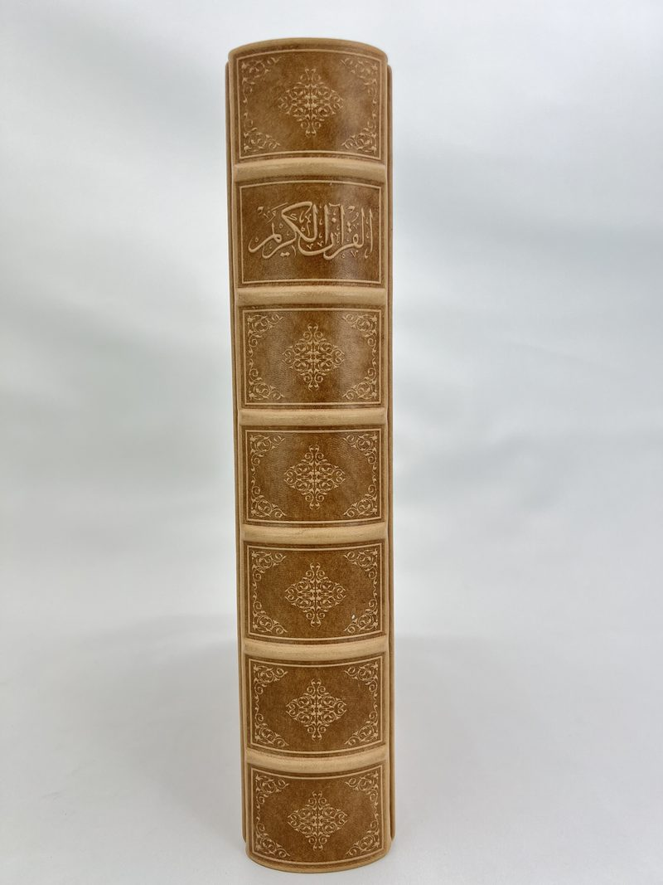

Yayıncılar için mushaf ve Kur'an ciltleri
Perakendeci değil üreticiyiz: GÜNALP 1978'den beri Türkiye'nin önde gelen dini yayıncıları için mushaf ve dini eser kapakları üretiyor, dünyanın dört bir yanına gönderiyor.
Klasik mushaf cildinin her ögesi İstanbul'da tek çatı altında üretilir: hakiki dana derisi ve termo deri kapaklar, 2 mm'ye varan derin elle gofraj, sıcak yaldız, altın yaldızlı kenarlar, kabartma sırt şeritleri, şemse ve Osmanlı geleneğinin mıklebi.
Toptan, edisyon edisyon çalışırız. Kitabın gövdesini matbaanız basar; biz onu taşıyan kapakları ve kutuları üretir, registrasyonu, rengi ve işçiliği baskı boyunca tek standartta tutarız. Kapak takma, kapağın matbu kitap gövdesine geçirilmesi, matbaanızın veya mücellidinizin işidir. Külliyatlar ve özel edisyonlar için yayınevlerine toptan cilt üretimi sayfamıza bakın.

Klasik mushaf cildi, seri üretimde
Cep boyundan rahle boyuna hakiki dana derisi, termo deri ve sırtı deri (çeyrek deri) mushaf kapakları. Her kapak elle çalışan preslerde basılır, paketlenmeden önce gözle denetlenir.
Desenler klasiktir: İslimi sarmallar, körleme tezyinat ve kırk yıllık kalıp arşivinden kenar suları; ya da çiziminizden yeni oyulan klişeler.
İşçiliğimizi görünParmak ucuyla okunan gofraj
2 mm'ye varan derin kabartma, çok tonlu sıcak yaldız ve perdahlanmış altın yaldızlı kenarlar; tümü elde bitirilir.




Mushafı taşıyan kutular
Sırt kutuları, kapaklı saklama kutuları ve lazer kesim iç yapılı hatim kutusu takımları; ciltle aynı atölyede tasarlanıp üretildiği için deri, yaldız ve desen birebir eşleşir.
Özgün kutu formları için özel tasarım çalışmalarımıza bakın.
Özel tasarım kutularÜretim yaptığımız dini yayıncılar
Türkiye'nin önde gelen yayınevleri için kırk yıllık mushaf kapağı ve sunum kutusu üretimi.
 Semerkand Yayınları
Semerkand Yayınları Hayrat Neşriyat
Hayrat Neşriyat Erkam Yayınları
Erkam Yayınları Envar Neşriyat (Hizmet Vakfı)
Envar Neşriyat (Hizmet Vakfı) Serhend Yayınları
Serhend Yayınları Ötüken Neşriyat
Ötüken Neşriyat Türkiye Yazma Eserler Kurumu
Türkiye Yazma Eserler Kurumu
Numuneden sevkiyata
- 01
Numune seti
Deri örnekleri, gofrajlı bir kapak ve mini bir kutu, DHL ile masanızda.
- 02
Teklif ve baskı öncesi
Ebat ve adede göre net teklif; klişeler ve onayınız için üretim öncesi numune.
- 03
Üretim
Elle pres, kapak ve kutu imalatı, tümü tek registrasyon standardıyla.
- 04
Kalite kontrol
Her adet, paketlenmeden önce gözle denetlenir.
- 05
İhracat ve sevkiyat
İhracat standardında paketleme; kapınıza ya da doğrudan matbaanıza teslim.
Ücretsiz numune setimizi isteyin
Deri örnekleri, gofrajlı bir kapak ve mini bir saklama kutusu, 2-4 gün içinde DHL ile masanızda.